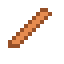
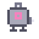
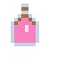

Professor Knabbelkloon is de slimste en meest verstrooide guh van de Guhzee. Zijn brilletje staat altijd scheef, zijn labjas zit vol knabbelsapvlekken en zijn notities liggen overal. Hij wilde een guh klonen die dubbel zoveel kaasknabbels eet... en op een heel rare manier is dat gelukt. Njeg!
Professor Knabbelkloon's storyHet verhaal van Professor Knabbelkloon
The professor (crooked round glasses he keeps pushing straight, a messy white tuft, a lab coat with a pink stain) wanted to clone a guh that could eat twice as many kaas knabbels. It didn't become a clone, but something new: the Guhtwo. And he really can eat twice as much, so the wish came true after all.
De professor (een scheef rond brilletje dat hij steeds rechtduwt, een warrig wit plukje, een labjas met een roze vlek) wilde een guh klonen die dubbel zoveel kaasknabbels kon eten. Het werd geen kloon, maar iets nieuws: de Guhtwo. En die kan echt dubbel zoveel eten, dus de wens kwam toch uit.
- He tells the story in bits and has lost his notes. Find the 6 labnotities around the lab (the spots sparkle for you; right-click a note to read it). With all six he remembers, and you get the trainerpetje.Hij vertelt het verhaal in stukjes en is zijn notities kwijt. Zoek de 6 labnotities in het lab (de plekjes glinsteren voor jou; rechtsklik een notitie om hem te lezen). Met alle zes weet hij het weer, en krijg je het trainerpetje.
- Get the 4 tank parts from the crates (a glass panel, a copper knabbel tube, a bubble pump and a bottle of pink knabbelsap) and click the tank to build them in: its four lamps go from red to green. The tank bubbles, and Mieuwguh appears, giggling. You get the trainerpakje.Haal de 4 tankonderdelen uit de kisten (een glazen paneel, een koperen knabbelbuisje, een borrelpompje en een fles roze knabbelsap) en klik op de tank om ze in te bouwen: zijn vier lampjes gaan van rood naar groen. De tank borrelt, en Mieuwguh verschijnt giechelend. Je krijgt het trainerpakje.
- The big meal: put a double portion (32 kaas knabbels and 2 snacks) in the grote knabbelschaal in the arena. The Guhtwo and Mieuwguh eat together, x2!, and become best friends. You get the Guhtwo-staartje and the Mieuwguh-ballonnetje.De grote maaltijd: doe een dubbele portie (32 kaasknabbels en 2 snackjes) in de grote knabbelschaal in de arena. De Guhtwo en Mieuwguh eten samen, x2!, en worden beste vriendjes. Je krijgt het Guhtwo-staartje en het Mieuwguh-ballonnetje.
- Click the Guhtwo: Mag ik met jou mee? Your own Guhtwo!Klik op de Guhtwo: Mag ik met jou mee? Je eigen Guhtwo!




